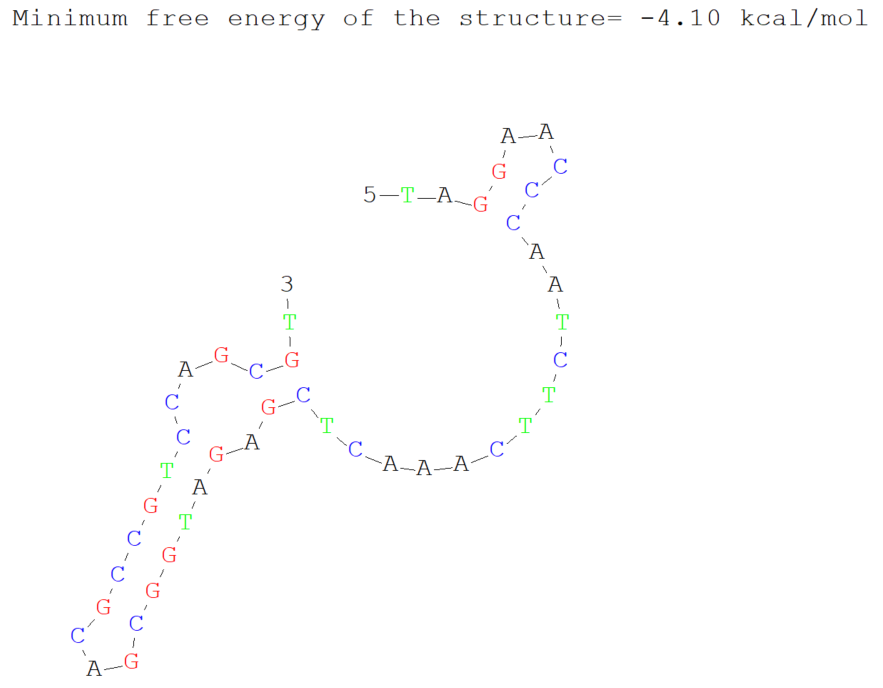

前言
在设计引物时，我们不能只在基因两端拉一节，我们还需要考虑很多因素：Tm 值、引物自连、引物互连、保护碱基、引物长度、引物特异性、价格、纯化方式。
引物长度与价格
理想情况下，我们的引物应该只挂载在我们的目的片段上，一般来讲，我们合成的配对碱基数一般都在 20(±2)nt，再加上同源臂或者酶切位点或者是保护碱基，引物总长度不应超过 50nt。而目前我们常用合成的最长长度是 150nt。
不同公司合成有不同的收费价格，价格还与修饰、纯化方式、引物浓度有关。一般来看，在 15nt 以下是按条计费，在 60nt 以下按每碱基收费，在 60nt 以上按另一套计费方案计费。
引物 Tm 值
退火温度与 Tm 值有关，而 Tm 值与长度，配对情况和 GC 含量有关，Tm 值控制在 20-65℃ 之间，两条引物的 Tm 值一般控制在 5℃ 以内，如果相差较大，以最低的 Tm 为准或适当延长退火时间，确保引物充分挂载。我们的核心目的是：在模板链没有相互配对时，让引物链与模板链相互配对。因为模板链非常大，因此配对温度需要较低，这也是引物 Tm 值要控制在 20℃ 以上的原因：防止模板链配对。在 Tm 值一定的情况下，温度越高，退火时间越短，引物挂在效率越低。
引物自连与互连
DNAMAN
引物自连与互连情况我们可以使用 DNAMAN 进行查看。在首页栏选择 Prime-Load Prime-From Input，输入引物序列，选择 Prime-Self complementarity，查看引物自连情况和 Minimum free energy of structures。选择 Prime-Two Primer Complementarity-Second Primer From Input 输入第二条引物序列，查看引物互连情况和 free energy。
3' 端的稳定性
如果引物的 3' 端发生了自连或互连，且形成了稳定的双链结构，聚合酶就会优先扩增引物本身，产生大量的引物二聚体条带，导致目的条带减弱甚至消失，因此，通常要求引物 3' 端的连续重叠碱基不要超过 2-3 个。
最小自由能
Minimum Free Energy (MFE)最小自由能 是指在给定的环境条件下（温度、离子强度），一个核酸序列（DNA 或 RNA）折叠成二级结构时所能达到的能量最低状态。我们希望其越大越好，这意味着引物不容易形成稳定的二级结构或二聚体。自连通常要求 $\Delta G > -6 \text{ kcal/mol}$，互连通常要求 $\Delta G > -5 \text{ kcal/mol}$，优秀的引物不应小于 $\Delta G > -2 \text{ kcal/mol}$，这是因为这种强度的二次结构在退火温度下极易打开，几乎不会对引物与模板的结合产生竞争。
引物自连
像这个引物在 3' 端形成了非常明显的发卡环，MFE 也过小，算不上优秀的引物。

引物互连
它们之间的互连并不是很严重。
Two primers complementarity.
Max complementarity in continuous: 4 bp, free energy=-0.00 Kcal/mol
5'-TAGGAACCCAATCTTCAAACTCGAGATGGCGACGCCGTCCAGCGT-3'
||||
3'-AGTTGGCTATAGTCTATATTTAGCTATTCGAATACCACTCGTTCC-5'
Max complementarity in discontinuous: 16 bp
5'-TAGGAACCCAATCTTCAAACTCGAGATGGCGACGCCGTCCAGCGT-3'
| || |||| || || | || | |
3'-AGTTGGCTATAGTCTATATTTAGCTATTCGAATACCACTCGTTCC-5'OD 值和纯化方法
OD 值就是要看你合成多少，同样浓度下，引物越长，OD 越大，我们 50nt 以下一般默认按照 OD = 1 合成就行，OD 越高越贵。
在引物合成过程中，由于化学合成是从 3' 端向 5' 端逐个添加碱基的，每一个步骤都不可能达到 100% 的偶联效率。因此，合成结束后粗产物中会含有：目标全长序列、缺失碱基的短链 (n-1, n-2... 失败序列)、脱保护残留物以及小分子盐分。
OPC / DSL 纯化（C18 柱纯化）
这是一种利用化学修饰差异进行的快速纯化。引物合成的最后一步保留 5' 端的 DMT 保护基团。全长序列带有 DMT，具有疏水性，能吸附在 C18 柱上；而未完成的短链不带 DMT，会被洗脱。最后再脱去 DMT 得到纯品。推荐 40-61nt 的引物纯化。
PAGE 纯化（聚丙烯酰胺凝胶电泳）
我们默认最常用的纯化方式，利用变性 PAGE 凝胶电泳，由于凝胶具有极高的分辨率，可以区分仅差一个碱基的 DNA 片段。电泳结束后，切下全长条带并回收。 纯度最高（>95%），能有效分离 $n$ 与 $n-1$ 链。价格最贵，周期最长，且回收过程中可能会引入微量凝胶残留或环境盐分，推荐 40-61nt 的引物纯化，同时也是超长引物纯化的唯一办法。
HPLC 纯化（高效液相色谱）
利用高压下的疏水性或离子交换差异进行分离，通过高压液相色谱柱，根据分子量和电荷的微小差异精细分离全长链和杂质，纯度极高，重复性好。适用于 5-20nt 短引物的纯化。
引物修饰
引物修饰是指在引物合成过程中，通过化学方法在 5' 端、3' 端或序列中间引入特定的功能基团，使其能够满足超出普通 PCR 的特殊实验需求。根据功能的不同，引物修饰主要分为以下几大类：
荧光标记
这是最常见的修饰，主要用于信号检测和定量。常用基团有 FAM、HEX、ROX、Cy3、Cy5、JOE 等。荧光基团在特定波长的激发光下发射荧光，通过检测荧光强度来实时监控扩增产物的量。应用于 qPCR（探针法）、荧光原位杂交（FISH）、片段长度分析（STR 分型）。通常需要配合淬灭基团使用。
亲和力与功能化基团
这类修饰常用于将 DNA 片段“抓”出来，或将其固定在固体表面。例如添加生物素修饰，利用生物素与链霉亲和素之间极强的非共价结合，用于 DNA 下拉实验、构建测序文库、ELISA 检测。或添加氨基/硫醇，允许 DNA 与蛋白质、酶或玻璃/金表面发生共价结合。常用于制作 DNA 芯片。